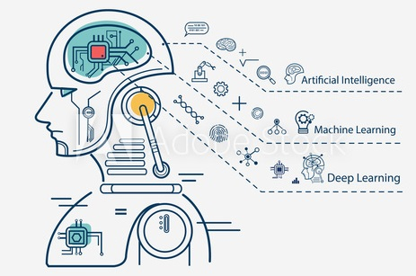
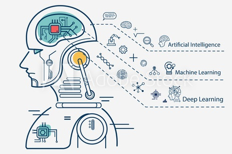

Biscs of Artificial intelligence Page
Links:
Computer science defines AI research as the study of "intelligent agents": any device that perceives its environment and takes actions that maximize its chance of successfully achieving its goals. A more elaborate definition characterizes AI as "a system's ability to correctly interpret external data, to learn from such data, and to use those learnings to achieve specific goals and tasks through flexible adaptation.
 
